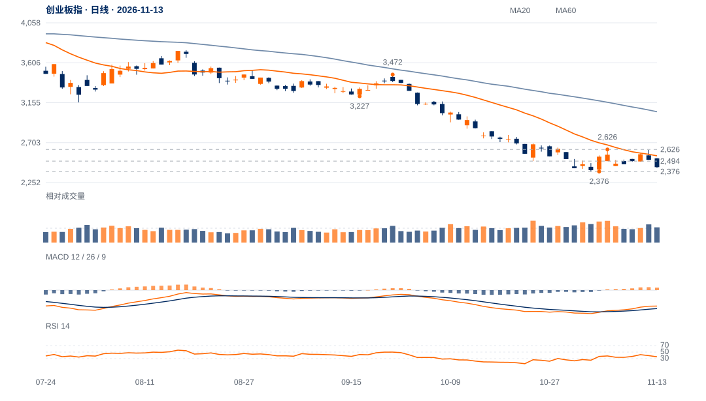

修复远未覆盖原跌幅
9月左高至低点跌31.57%，现价仅修复该价差4.54%；近20日仍跌12.49%，相对沪深300比值跌9.13%，为本组较弱表现。
趋势证据仍偏弱，2376附近是决定低位反应的关键。跌势后反抽可以发生，但2494未收回前，不足以将价格恢复升级为中期底部。

查看大图 ↗先收回2494、2554，再检验原2626两日条件；2672中峰另核。
2376原低点失守，否定当前二次测试守住的假设。
9月左高至低点跌31.57%，现价仅修复该价差4.54%；近20日仍跌12.49%，相对沪深300比值跌9.13%，为本组较弱表现。
11月3日以来尾段8日净升1.44%，日均量约为前跌波1.29倍；13日量比1.06却收于振幅底部8%，需求增加尚未换来持续价格结果。
2494是较早低点转为上方阻力的区域，现价距2376仅0.48ATR。日线动量修复与周线弱势冲突，必须由2494及更高结构的回收解决。
11月4日低点所在日收盘动量已较前次低点日改善，且旧低未破，急反弹风险真实存在；这不是盘中最低价时已经可知的底背离确认。